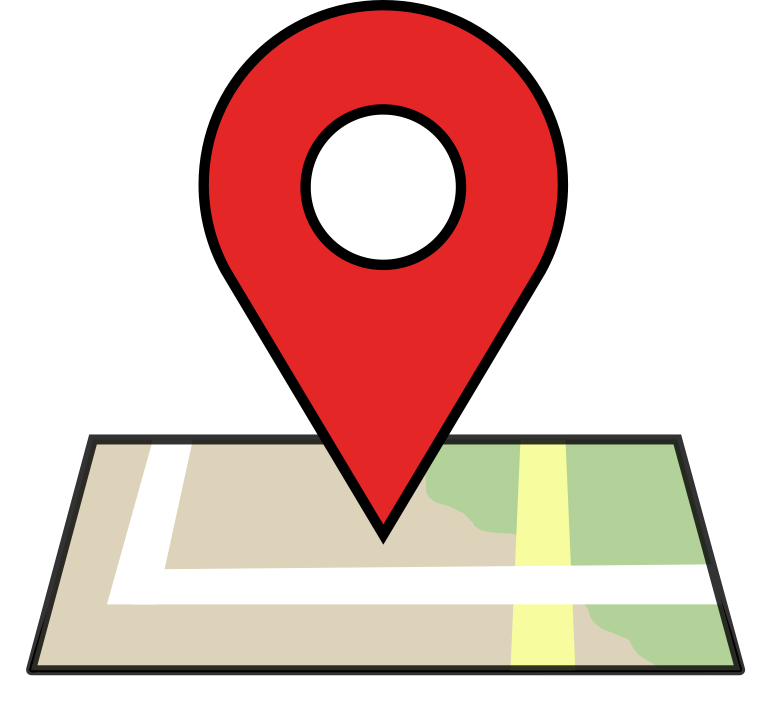
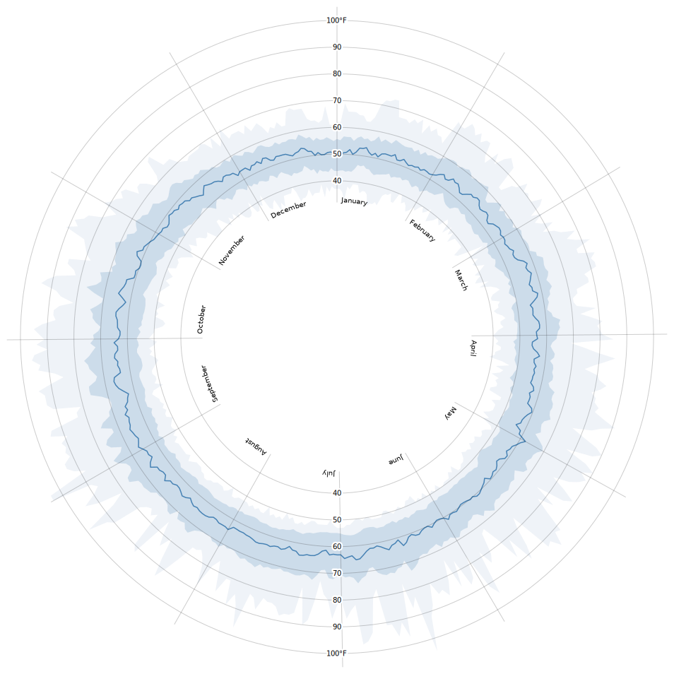

Random Station Name

Put a map here that marks the location of the selected station.
| Country | Germany |
|---|---|
| Data provider | Deutscher Wetterdienst |
| Elevation | 350m |
| Latitude | 12.34°N |
| Longitude | 43.21°E |

Put a radial plot here. One revolution is one year. Show snow depth measured at this station for each month that data is available for. We plan to have the plot animated such that the user can follow the line being drawn as time advances.
 Put a bar plot here. Show characteristics measured at this station, either for a selected month (most likely the same month that the radial plot on the left is currently at).
Put a bar plot here. Show characteristics measured at this station, either for a selected month (most likely the same month that the radial plot on the left is currently at).